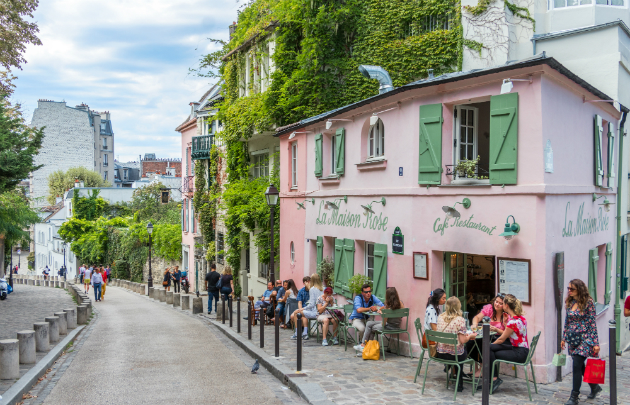
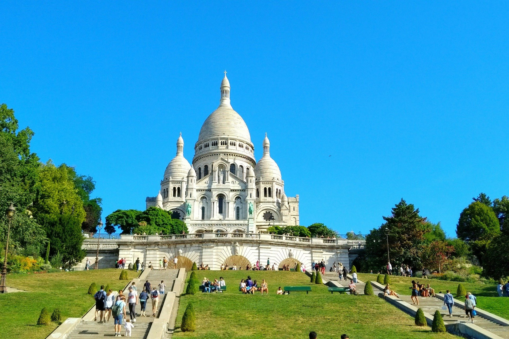

Ајфелова кула или Ајфелов торањ (франц. la Tour Eiffel) је метални торањ саграђен на Марсовим пољима у Паризу (Француска) и данас је знаменитост и симбол Париза. Саграђена је 1889. као експонат за Светску изложбу поводом прославе стогодишњице француске револуције. До 1930. године је била највеће здање на свету са својих 300 m висине.Име је добио по инжењеру који га је пројектовао Гиставу Ајфелу (франц. Gustave Eiffel). Данас је значајна туристичка атракција са преко 5,5 милиона посетилаца годишње.
Торањ је грађен од 1887. до 1889. године и послужио је као главна капија за улаз на Светску изложбу 1889.На почетку свог постојања омражена од стране Парижана, чак 40 година за редом била је највеће здање на свету. Првобитно је било планирано да Ајфелова кула буде само привремена структура, која ће након 20 година бити срушена, што се није догодило из једног простог разлога: кула представља изузетно важну радиотелевизијску станицу.
Монмартр (франц. Montmartre) је северни, највиши део Париза(надморска висина 127 м), са којег се види цео град.
Најверније сачуван изглед старог Париза са кривудавим улицама и старим кућама. У другој половини 19. века био центар уметничког и боемског живота, па је то добрим делом и данас. Као и у прошлости и данас се ту окупља велики број уличних сликара који осликавају улице, кафане, барове, забавна позоришта и друго. Такође, на Монмартру су снимани и многи француски култни филмови. Осим тога налази се и базилика "Светог срца", на чијем се простору налази и познато гробље Монмартр на коме су сахрањене многе познате личности.
 
Мулен руж (франц. Moulin Rouge у дословном преводу црвена ветрењача) је париски ноћни клуб и кабаре који је 1889. саградити Жозеф Олер. Мулен руж је саграђен у Монмартру због боемског живота који се тамо, у то време, водио. На самом крову има велику имитацију црвене ветрењаче.
У њему су се изводиле најразличитије музичке и плесне нумере, од којих је најпопуларнија била чувени кан-кан плес, а посетиле су га и бројне познате личности. Године 1915. зграда театра је у потпуности изгорела у пожару, да би после много напора била обновљена неколико година касније, и до дана данашњег остала оно што јесте.
Нотр Дам (франц. Notre Dame) je катедрала посвећена Богородици Марији саграђена у готичком стилу на реци Сени. Изградња је започела на подстицај бискупа Мориса де Салија, те се протегнула кроз више од два века, од 1163. године све до половине 14. века. Након револуционарних немира на катедрали су предузети значајни подухвати које је водио архитекта Ежен Виоле ле Дик, током којих су уведени нови елементи и мотиви. Две розете које се налазе на крајевима трансепта највеће су розете у Европи.
Вековима је катедрала била једна од највећих грађевина западне цивилизације. Била је инспирација бројним уметничким делима међу којима је и књига Виктора Игоа Звонар Богородичне цркве. Од почетка 21. века катедралу годишње посећује око 14 милиона туриста и ходочасника, што је чини једном од најпосећенијих грађевина у целој Европи. Године 2019. претрпела је страшан пожар у којем су изгорели кров и торањ.